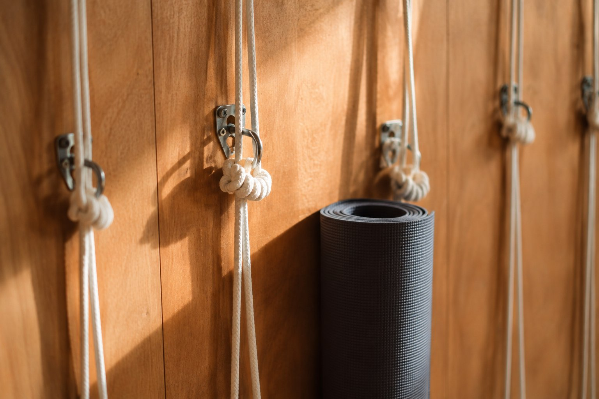
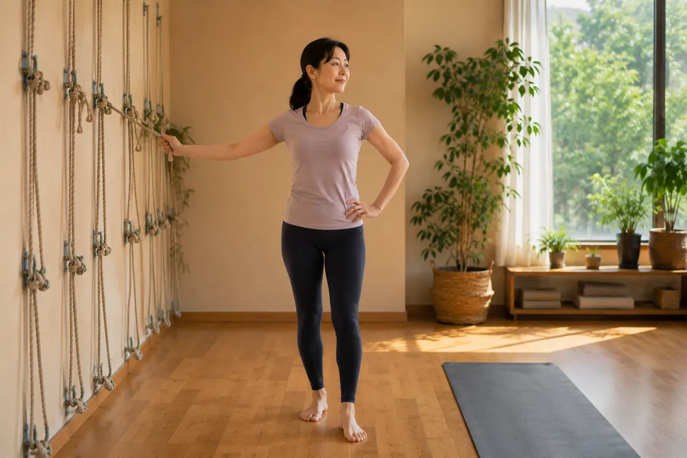
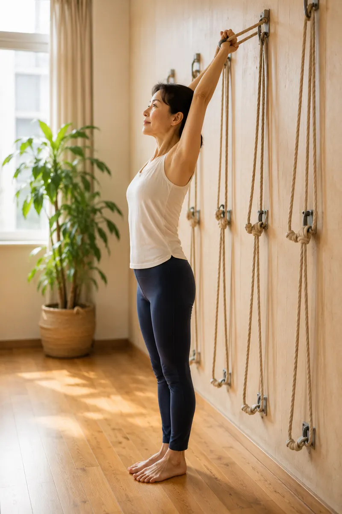

壁繩瑜伽和一般墊上瑜伽差在哪？第一次怎麼選？

在墊上做前彎，手還沒碰到地，腰就先緊了。你看著旁邊的壁繩，心裡想的是：如果有個地方可以扶，我會比較跟得上嗎？
壁繩瑜伽與墊上瑜伽的差異，主要在支點和上課節奏。手握繩帶時，牆上的固定點可改變身體分配重量的方式；墊上練習也能用瑜伽磚或椅子增加支點。想有人協助調整幅度，可先問壁繩小班。偏好連續動作，可看墊上課的節奏。合適度取決於動作、帶課方式與當天狀態。
壁繩瑜伽和墊上瑜伽，支點差在哪？
同樣是髖往後移，手中多了一個穩固支點，有些人比較容易停在自己能控制的高度。墊上課也可以把手放在磚上，或靠牆練習。比較課程時，先問老師會怎麼用輔具、會不會示範幅度較小的版本。想知道繩帶怎麼固定和使用，可先讀壁繩瑜伽的基本原理。

👆 手機版可左右滑動
| 比較項目 | 壁繩瑜伽 | 一般墊上瑜伽 |
|---|---|---|
| 常用支點 | 固定於牆面的繩帶，搭配腳底或其他輔具。 | 地板、墊面，也可加磚、牆面或椅子。 |
| 節奏 | 視課程而定，常能停下來試站位或換支點。 | 流動課可能連續換式，入門課也能安排慢節奏。 |
| 第一次怎麼選 | 想要固定支點、想問老師如何縮小動作。 | 偏好墊上練習，且能找到節奏合適、可調整的課。 |
身體硬、怕跟不上，該選壁繩還是墊上課？
如果你最怕的是手碰不到地、換姿勢又太快，可以先看筋骨硬的新手怎麼開始。如果顧慮來自不知道老師會帶什麼，就讀第一次上壁繩課的流程。選課前把你最在意的支點、節奏或班級形式記下來，再比較團課、入門班和一對一方案。

本文是一般動作與課程資訊。若練習引發明顯不適，先停止並依情況尋求醫療專業評估。
常見問題
壁繩和墊上瑜伽最主要的差別是什麼？
壁繩多了連到牆面的支點。墊上瑜伽可用地面與輔具，課堂節奏也隨老師和課型而變。
壁繩一定會比墊上課輕鬆嗎？
動作、繩帶位置和個人狀態都會影響體感，兩種課都可從小幅度開始。
完全沒基礎要選哪一種？
先找願意示範簡化版本的入門課，依自己偏好的支點、班級人數和節奏選。
墊上瑜伽可以用輔具嗎？
可以。瑜伽磚、椅子或牆面都能改變手腳支撐的位置，使用方式依課程而定。
只想先了解課程，可以先做什麼？
先比較班級形式，並問老師能不能示範適合你目前幅度的版本。
想看實際有哪些課可以選？
先挑你比較在意的條件：想要固定支點、希望步調慢一些，或想請老師多看一次動作。帶著這個條件去看課型、時段和費用，會更好選。
查看課程方式與費用 →如果看完比較仍不確定自己適合壁繩減壓還是基礎墊上課程，建議先預約 首次 NT$299 AI 體態檢測，或直接參考 1 對 1 與小團課方式，由老師現場依你的活動度評估安排。
想問老師一個問題？
可以直接開啟 LINE。下面兩個欄位都可以留空。